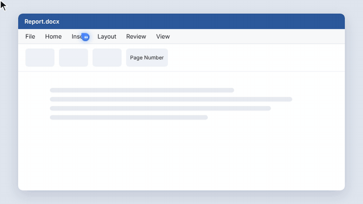

Hold Ctrl + Alt and ask about anything on your screen. Perch answers out loud, points at the right button, and can even do the task for you. Free and open source, for Windows.
Windows 10 and 11 · Free with Gemini or a local AI · MIT licence

Like having a patient friend sitting next to you at the computer.
Hold the keys and ask, or just say “Hey Perch”. Speech recognition runs on your PC.
Ask about the app, page or error in front of you. Perch takes one screenshot when you ask.
The buddy flies to the right button, circles it, or draws an arrow while it explains.
“Open Chrome and search for…”, “write me a comparison…”. It clicks and types, and asks before anything risky.
Answers are read aloud in a natural-sounding voice that runs locally, sentence by sentence.
It remembers your preferences, and “remind me at 5 to send the report” just works.
Choose the AI behind Perch. Two of the three options cost nothing.
| AI | Cost | Good for |
|---|---|---|
| Geminifree | Free key from Google AI Studio, no card. Daily limits. | Any PC. Note: on the free tier Google may use what you send to improve its products. |
| Local (Ollama)free | Completely free, no limits. | Privacy: nothing leaves your PC. Needs about 16 GB of RAM. |
| Claude | Pay as you go with your own API key. | The best answers, pointing and agent tasks. |
No account with us, nothing to configure beyond picking your AI.
Download and run the installer. If SmartScreen warns you, choose More info → Run anyway.
Click the blue tray icon and choose Gemini, Local or Claude. Perch updates itself after that.
Hold Ctrl + Alt, ask, and let go. Press Esc any time to stop it.
Speech recognition and the natural voice both run on your PC.
Nothing is sent while Perch is idle. With the local AI, nothing leaves your PC at all.
The agent asks before sending, buying or deleting, never types passwords, and Esc stops it instantly.